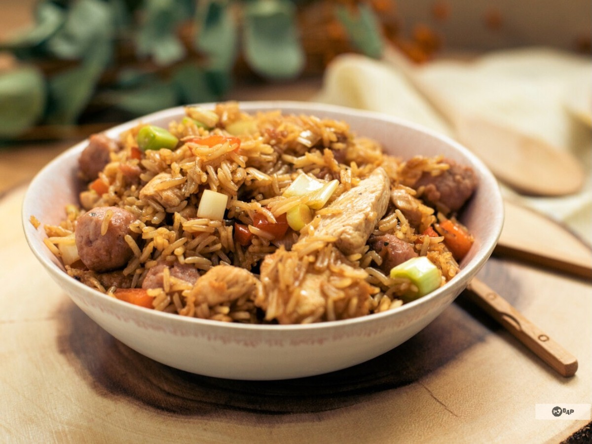

🥡 Receta de Arroz Chino

Ingredientes:
- 2 tazas de arroz cocido
- 2 huevos batidos
- 1 zanahoria picada en cubos
- 1/2 taza de guisantes
- 1/2 taza de cebollín picado
- 150g de pollo o camarones (opcional)
- 3 cucharadas de salsa de soja
- 2 cucharadas de aceite de sésamo o vegetal
- Sal y pimienta al gusto
Preparación:
- En una sartén grande o wok, calienta una cucharada de aceite y cocina los huevos revueltos. Retira y reserva.
- En la misma sartén, añade otra cucharada de aceite y sofríe la zanahoria y los guisantes durante 2 minutos.
- Agrega el pollo o camarones (si usas) y cocina hasta que estén bien hechos.
- Incorpora el arroz cocido y mezcla bien con los demás ingredientes.
- Vierte la salsa de soja y revuelve hasta que el arroz tome color.
- Agrega los huevos revueltos y el cebollín, mezcla bien y cocina 1 minuto más.
- Sirve caliente y disfruta de tu arroz chino casero. 🥢